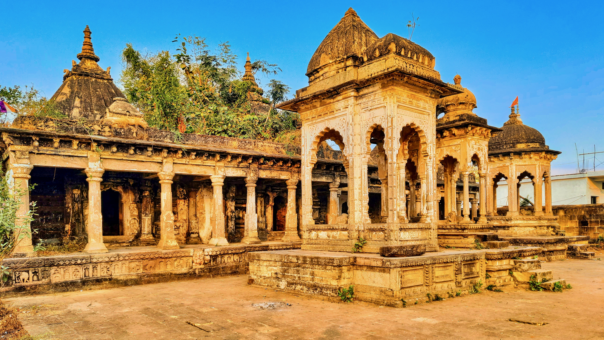

Bhandara
2-day trip
Package : 20,000 Rs

Bhandara serves as an agricultural center for farmers in the region, who mostly grow rice. The city speaks Marathi language. Bhandara city is famous for brass and is known as ' Brass City ' also, Bhandara, as a district is famous for lakes and is known as ' District of lakes '
- Ambagarh Fort:A historic fort that offers panoramic views of the surrounding landscape and a glimpse into the region's rich history.
- Gosikhurd Dam: One of the largest irrigation projects in Maharashtra, it provides picturesque views and is a key area for water-based activities.
- Koka Wildlife Sanctuary:A haven for wildlife enthusiasts, this sanctuary houses a variety of flora and fauna and is ideal for bird watching and nature walks.
- Rawanwadi Dam:Popular among locals for picnicking, this dam offers a tranquil setting and beautiful scenery.
- Nagzira Wildlife Sanctuary:Located on the boundary of Bhandara, it's a critical habitat for wildlife conservation and attracts tourists for its tiger sightings and safari tours.